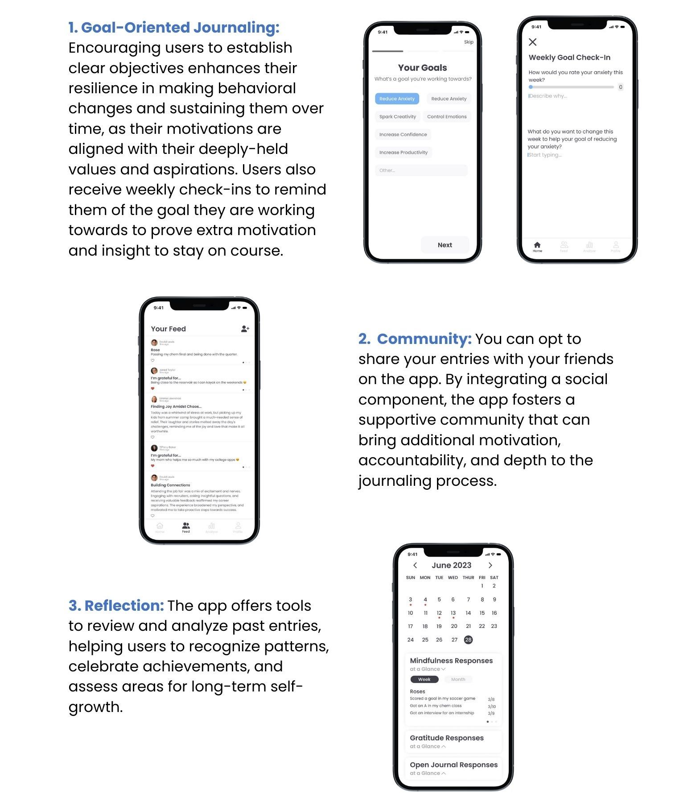
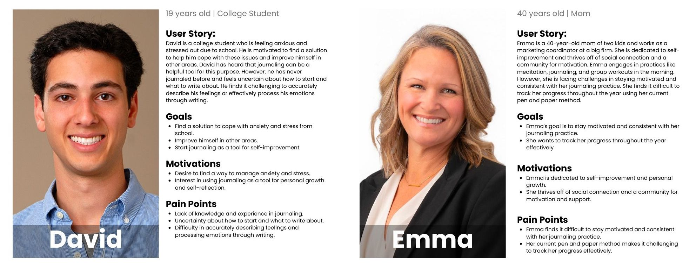
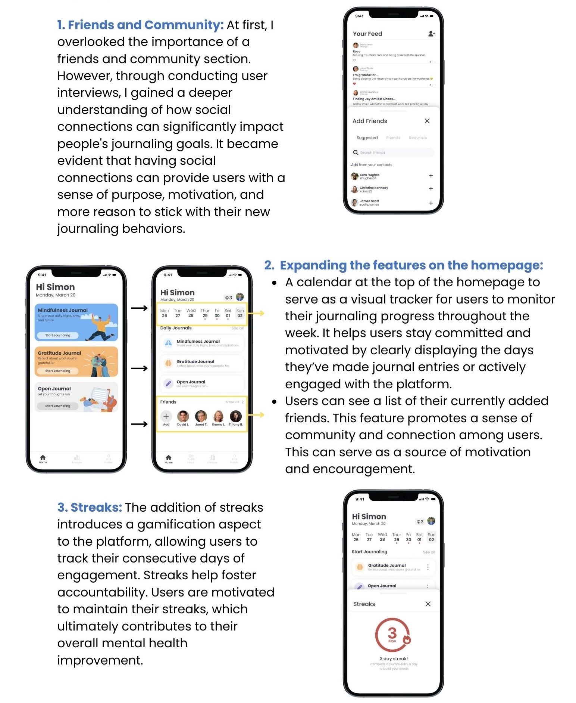
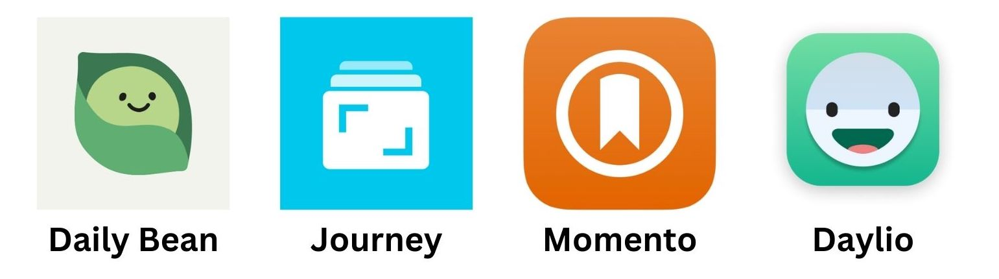

Timeline & My Role
- January - February 2023 (4 weeks)
- Solo student project
Problem:
Journaling has long been recognized as an effective tool for self-improvement and personal growth. However, people often struggle with consistency in journaling due to time constraints, lack of motivation or guidance, and difficulty in reflecting on and applying their insights. As a result, the mental health benefits that journaling can offer often go unrealized. How can we address these barriers and make journaling a more accessible, engaging, and rewarding process?
Solution:
User Interviews
To gain deeper insights into my target audience, I conducted user interviews. These interviews allowed me to connect with individuals I believed closely resembled our target personas. The primary goals were to assess their interest in the app and to understand their current mobile gaming habits, helping me refine our product based on their feedback.
Insights:
- Need for Flexibility in Journaling Practice: Users feel rushed due to time constraints and pressured to achieve perfection in their entries. The need for an adaptation in the journaling method, such as quick entries for busy days or various journaling styles to suit different moods or comfort levels, is apparent.
- Social Connection Through Shared Journaling: Users appreciate the op;on to share their entries with friends as it fosters a deeper connection and provides motivation to continue journaling. The shared experience of journaling within a community can enhance engagement and make the process more enjoyable.
- Progress Tracking for Motivation: Users are motivated to continue journaling when they can easily tra[ their progress and see their goals come to fruition. The ability to visually see their growth and development over time can be a powerful incentive to maintain a regular journaling practice.
Personas
Testing & Improvments
Competitive Analysis:
I analyzed the 4 most popular apps surrounding journaling. I found that few of them had the aspect of a guided journals and almost none had an added social aspect to help the user achieve their goals. This then became my opportunity for a solution.
